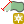

(for a line layer).
(for a line layer).
Improved Polygon Capturing is a QGIS Python plugin, that allows to digitize new polygons or lines with predefined edge lengths. Point layers are not handled.
The plugin is available in the QGIS contributed repository. Please see the official QGIS manuals to get further information about plugin repositories.
The plugin adds a new icon to the digitizing toolbar.
Select a polygon or a line layer and toggle editing by clicking on  (for a polygon layer) or on (for a line layer).
The following Dockable palette will appear :

From now on, you can enter the distance or the angle numerically in the edit fields. You have to check the "Lock" checkbox to actually lock the distance and/or the angle.
You can also switch between absolute angle or relative angles (relatives angles are relative to the last line segment).
The following shortcuts are available:
Similar to the standard editing tools left
mouse clicks add a new vertex while right mouse clicks finish the
geometry.
After finishing a new geometry the feature form opens and
attributes can be entered.


While digitizing new vertices the snapping properties from the current
project settings are considered as well as the avoiding intersection
properties.
The plugin calculates the distance in plain trigonometry. Thus it is not recommended to use it in unprojected systems like EPSG:4326.
Improved polygon capturing plugin has been initially developed in June 2010 for a land management and registration project in the Lao PDR. It is used to digitize land parcels with known edge lengths from high-resolution satellite images. The parcel edges have been measured a priori in the field.
Developed and maintained by Adrian Weber
Contributed by Olivier Dalang